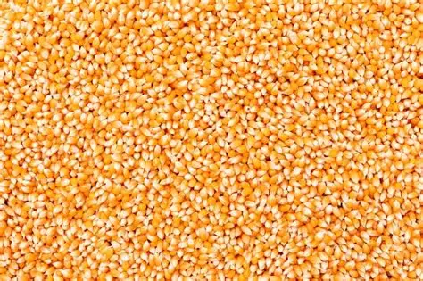

Mudando o mundo, a favor da qualidade das safras 🌱
Conectamos agricultores a empresas e doadores que oferecem mudas e sementes por preços acessíveis.
Mudas e Sementes

Mudas de Tomate
R$ 12,90
Mudas saudáveis para pequenos produtores.

Sementes de Milho
R$ 9,90
Ideal para agricultura familiar e sustentável.

Mudas de Café
R$ 18,90
Produção de qualidade para pequenos agricultores.